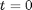
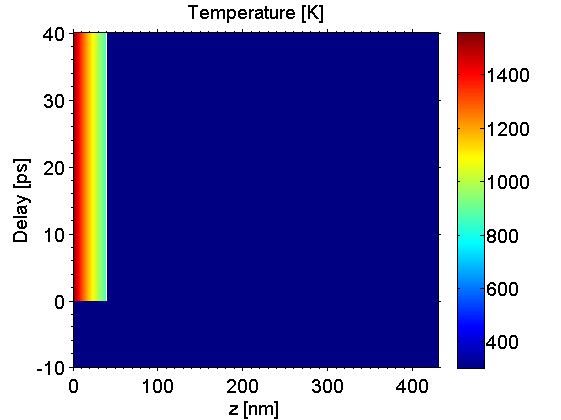
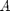
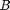
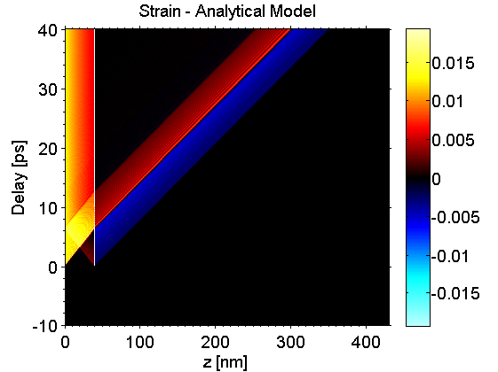
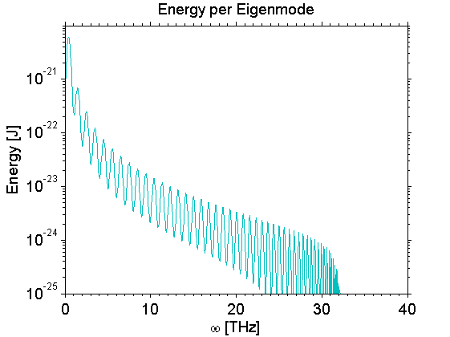
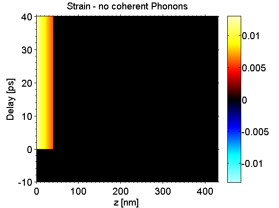
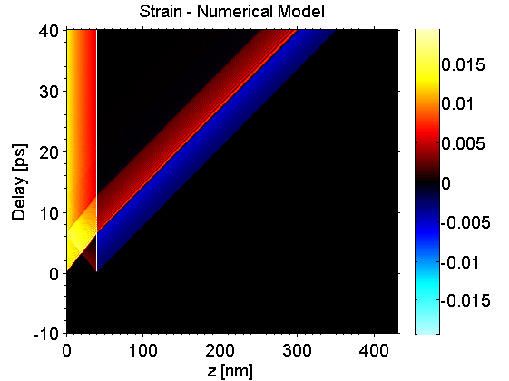

Phonon Example
In this example we show how to calculate coherent phonon dynamics from an excited sample structure. These dynamics can be caclulated by an analytical or numerical model. In general the numerical model is faster and also allows for damping and anharmonicity of the inter-atomic potentials in the structure.
Before we can start a phonon simulation we need to build a sample structure and simulate the temperature map after the excitation.
Be sure to include all folders of the udkm1dsim toolbox to your MATLAB search path. Especially the /parameters and /helpers folders with all their subfolders.
Contents
here we clear the workspace and close all figures
clear all; close all; % these are some units and constants we can use later on u = units; const = constants;
Build a Sample Structure
O = atomBase('O'); Ti = atomBase('Ti'); Sr = atomBase('Sr'); Ru = atomBase('Ru'); Pb = atomBase('Pb'); Zr = atomBase('Zr'); cSTOsub = 3.905 *u.ang; cSRO = 3.94897 *u.ang; svSRO = 6.312 *u.nm/u.ps; svSTO = 7.800 *u.nm/u.ps; propSRO.aAxis = cSTOsub; % aAxis propSRO.bAxis = cSTOsub; % bAxis propSRO.debWalFac = 0; % Debye-Waller factor propSRO.soundVel = svSRO; % sound velocity propSRO.optPenDepth = 43.8*u.nm; % optical penetration depth propSRO.thermCond = 5.72*u.W/(u.m *u.K); % heat conductivity propSRO.linThermExp = 1.03e-5; % linear thermal expansion propSRO.heatCapacity = @(T)(455.2 + 0.112.*T - 2.1935e6./T.^2); % heat capacity [J/kg K] SRO = unitCell('SRO','SRO',cSRO,propSRO); SRO.addAtom(O,0); SRO.addAtom(Sr,0); SRO.addAtom(O,0.5); SRO.addAtom(O,0.5); SRO.addAtom(Ru,0.5); propSTOsub.aAxis = cSTOsub; % aAxis propSTOsub.bAxis = cSTOsub; % bAxis propSTOsub.debWalFac = 0; % Debye-Waller factor propSTOsub.soundVel = svSTO; % sound velocity propSTOsub.optPenDepth = Inf; % optical penetration depth propSTOsub.thermCond = 12*u.W/(u.m *u.K); % heat conductivity propSTOsub.linThermExp = 1e-5; % linear thermal expansion propSTOsub.heatCapacity = @(T)(733.73 + 0.0248.*T - 6.531e6./T.^2); % heat capacity [J/kg K] STOsub = unitCell('STOsub', 'STOsub', cSTOsub, propSTOsub); STOsub.addAtom(O,0); STOsub.addAtom(Sr,0); STOsub.addAtom(O,0.5); STOsub.addAtom(O,0.5); STOsub.addAtom(Ti,0.5); S = structure('Single Layer'); S.addSubStructure(SRO,100); % add 100 layers of SRO to sample S.addSubStructure(STOsub,1000); % add 250 layers of STO substrate distances = S.getDistancesOfUnitCells();
Initialize Heat Simulation
cacheDir = './cache'; forceRecalc = false; H = heat(S,forceRecalc); H.setCacheDir(cacheDir); % set the cache directory time = (-10:0.1:40)*u.ps; fluence = 20*u.mJ/u.cm^2; initTemp = 300*u.K;
Excitation
Calculate the temperature map after instantaneous excitation at . For the phonon simulations also the differential temperature map deltaTempMap in time is necessary:
[tempMap deltaTempMap] = H.getTempMap(time,fluence,initTemp);
Elapsed time for _temperatureAfterDeltaExcitation_: 0.56265 seconds. Elapsed time for _tempMap_: 0.61502 seconds. _tempMap_ saved to file .\cache\tempMap_be3805e09c8a88ad8091020d5693a1aa_246e954d5f98c4c69e562e4d29c1054c.mat
plot the results:
figure(1) kk = surf(distances/u.nm,time/u.ps,tempMap); set(kk, 'LineStyle', 'none'); title('Temperature [K]'); xlabel('z [nm]'); ylabel('Delay [ps]'); axis([distances(1)/u.nm distances(end)/u.nm time(1)/u.ps time(end)/u.ps]) box; colorbar; colormap(jet(255)); set(gca, 'XMinorTick', 'on', 'YMinorTick', 'on', 'TickDir', 'out');
Analytical Phonon Simulation
The phonon simulation object is similar to the heat simulation and needs to be initialized with a sample structure and the foreceRecalc boolean. Afterwards the cacheDir and display parameters are set.
P = phononAna(S,forceRecalc); P.setCacheDir(cacheDir); % set the cache directory % set the display parameters for this simulation object P.dispMessages = true; P.dispCalcTime = true; P.progressBarType = 'text';
The coherent phonon dynamics (strainMap) is calculated by one line providing the time, and temperature inputs of the heat simulation. Additionally we output the cofficient vecotors  and  of the eigenproblem solution in order to calculate the energy spectral density.
[strainMap, ~, ~, A, B] = P.getStrainMap(time,tempMap,deltaTempMap);
Calculating linear thermal expansion ... Calculating _eigenValues_ ... Elapsed time for _eigenValues_: 2.1379 seconds. _eigenValues_ saved to file .\cache\eigenValues_e526d78145e4f18c5abeb5cb94b1e39f.mat Calculating _strainMap_ ... Please wait... 100% [..................................................] Elapsed time for _strainMap_: 3.4076 seconds. _strainMap_ saved to file .\cache\strainMapAna_e526d78145e4f18c5abeb5cb94b1e39f_d5e9d90287eca05336cfa1a7e2a802b3.mat
plot the results:
figure(2) kk = surf(distances/u.nm,time/u.ps,strainMap); set(kk, 'LineStyle', 'none'); title('Strain - Analytical Model'); xlabel('z [nm]'); ylabel('Delay [ps]'); axis([distances(1)/u.nm distances(end)/u.nm time(1)/u.ps time(end)/u.ps]) box; colorbar; colormap(fireice(255)); caxis([-max(max(strainMap)) max(max(strainMap))]); set(gca, 'XMinorTick', 'on', 'YMinorTick', 'on', 'TickDir', 'out');
Calculate the energy spectral density of the coherent phonon dynamics from the cofficient vecotors and of the eigenproblem solution.
[omega E] = P.getEnergyPerEigenmode(A,B);
_eigenValues_ loaded from file .\cache\eigenValues_e526d78145e4f18c5abeb5cb94b1e39f.mat
plot the results:
figure(3) semilogy(omega/u.THz,E) xlabel('\omega [THz]'); ylabel('Energy [J]'); ylim([1e-25 1e-20]); title('Energy per Eigenmode'); box on; set(gca, 'XMinorTick', 'on', 'YMinorTick', 'on', 'TickDir', 'out');
If no coherent phonon dynamics are required and one only needs the lattice strains due to thermal expansion, the calculations can be speeded up by setting:
P.onlyheat = true; strainMap = P.getStrainMap(time,tempMap,deltaTempMap);
Calculating linear thermal expansion ... Elapsed time for _strainMap_: 0.091669 seconds. _strainMap_ saved to file .\cache\strainMapAna_e526d78145e4f18c5abeb5cb94b1e39f_7c1d1990d50475bf422a1f6e08463415.mat
plot the results:
figure(4) kk = surf(distances/u.nm,time/u.ps,strainMap); set(kk, 'LineStyle', 'none'); title('Strain - no coherent Phonons'); xlabel('z [nm]'); ylabel('Delay [ps]'); axis([distances(1)/u.nm distances(end)/u.nm time(1)/u.ps time(end)/u.ps]) box; colorbar; colormap(fireice(255)); caxis([-max(max(strainMap)) max(max(strainMap))]); set(gca, 'XMinorTick', 'on', 'YMinorTick', 'on', 'TickDir', 'out');
Numerical Phonon Simulation
The numerical simulations is nearly similar to the analytical one:
clear P; P = phononNum(S,forceRecalc); P.setCacheDir(cacheDir); % set the cache directory % set the display parameters for this simulation object P.dispMessages = true; P.dispCalcTime = true; P.progressBarType = 'text';
Again, the coherent phonon dynamics (strainMap) is calculated by one line providing the time, and temperature inputs of the heat simulation:
strainMap = P.getStrainMap(time,tempMap,deltaTempMap);
Calculating linear thermal expansion ... Calculating coherent dynamics with ODE solver ... ODE integration: 99% [................................................. ] Elapsed time for _strainMap_: 7.2023 seconds. _strainMap_ saved to file .\cache\strainMapNum_e526d78145e4f18c5abeb5cb94b1e39f_d5e9d90287eca05336cfa1a7e2a802b3.mat
plot the results:
figure(5) kk = surf(distances/u.nm,time/u.ps,strainMap); set(kk, 'LineStyle', 'none'); title('Strain - Numerical Model'); xlabel('z [nm]'); ylabel('Delay [ps]'); axis([distances(1)/u.nm distances(end)/u.nm time(1)/u.ps time(end)/u.ps]) box; colorbar; colormap(fireice(255)); caxis([-max(max(strainMap)) max(max(strainMap))]); set(gca, 'XMinorTick', 'on', 'YMinorTick', 'on', 'TickDir', 'out');